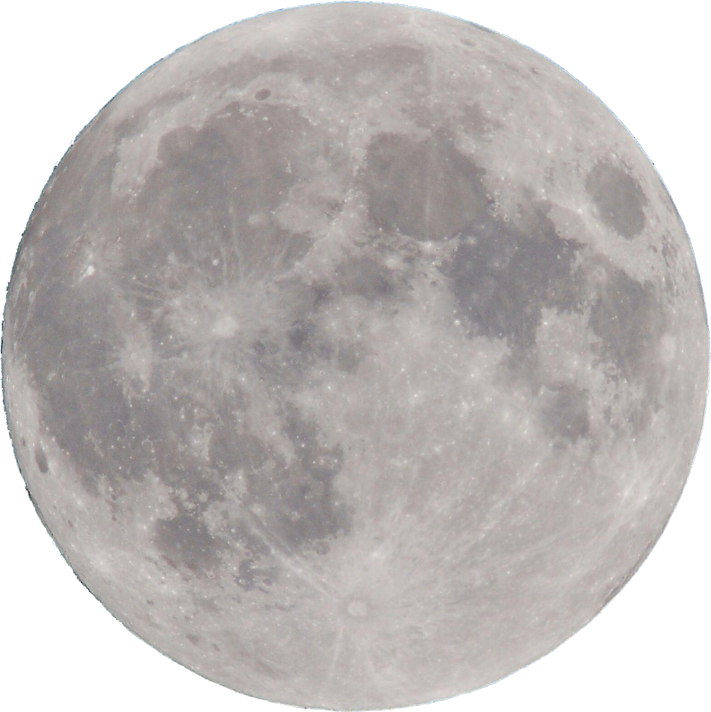
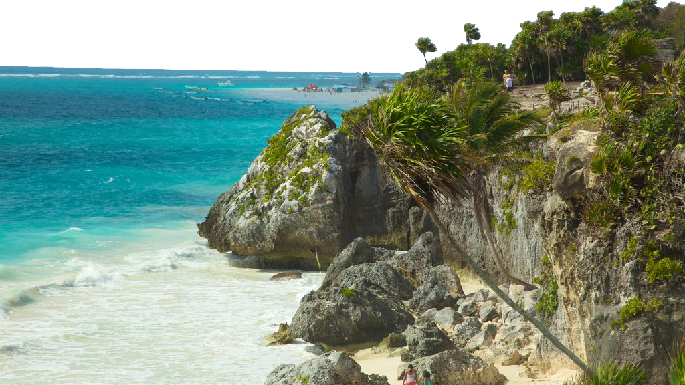
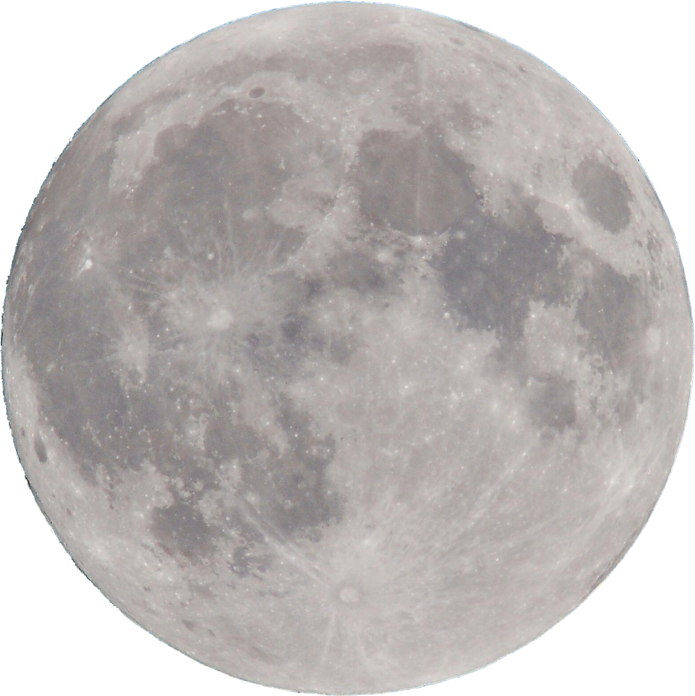
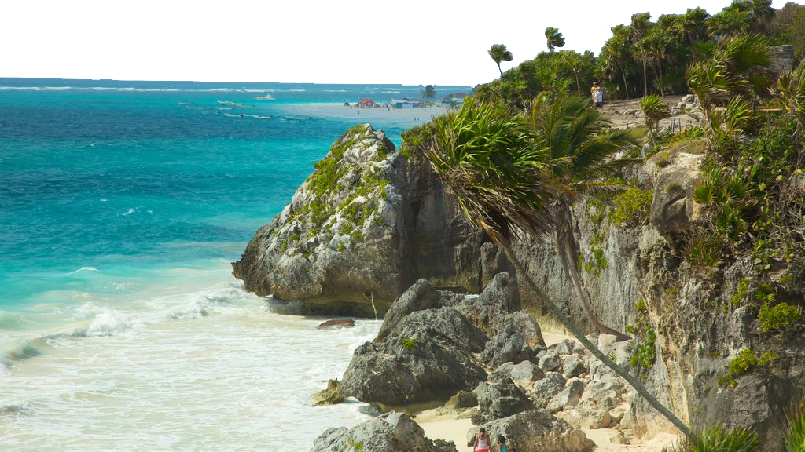
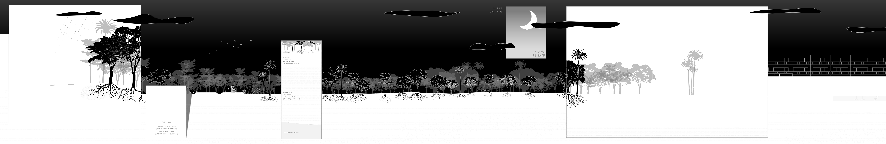

Tulum Fuana
About Tulum
Tulum's fauna is rich and diverse, featuring jaguars, monkeys, iguanas, parrots, and sea turtles that thrive in its tropical ecosystem. The region is home to mangroves, rainforests, and coral reefs, providing a unique habitat for many species. Whether exploring the jungle or snorkeling along the coast, Tulum offers an incredible opportunity to witness the vibrant wildlife of Mexico's Caribbean.

For more information, please
click here.
Content will be updated in the future.